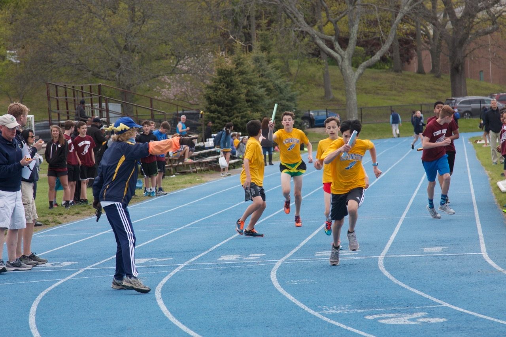

Home
Pictures
Videos
Times
Track Website Alex
Alex N-C's 6th grade track times
Search Alex Newton-Cheh

PICTURES AND VIDEOS OF ALEX AND OTHER SIMILAR RUNNERS
Click here for pictures
Click here for videos
For more information for cross country, click here.